Как пользоваться платформой MEEMacmillan Education Everywhere · инструкция для учителя
Раздел 1 / 15
ANGLE · Студия системного английского
Как пользоваться платформой MEE
Инструкция для учителя · Macmillan Education Everywhere
Добро пожаловать
Эта инструкция проведёт вас через учительскую часть платформы MEE — от регистрации и создания учебного заведения до классов, домашних заданий, проверочных работ, прогресса учеников и оценивания.
Листайте страницы кнопкой «Дальше» внизу или точками разделов вверху — возвращайтесь к любому шагу в любой момент.
13 разделов · скриншоты оригинала платформы
Системные требования
Платформа Macmillan Education Everywhere (MEE) доступна для скачивания на компьютер, планшет и мобильные устройства. Есть и версия в браузере — mee.macmillaneducation.com.
3Выберите тип аккаунта Teacher/Administrator и страну проживания, нажмите Next.
4Заполните имя, фамилию и email, придумайте логин и пароль, примите условия — Submit.
5Нажмите Go to Macmillan Education Everywhere, чтобы открыть книжную полку и активировать код.
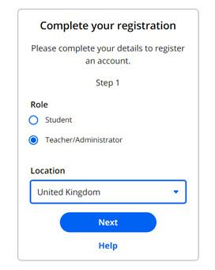
Вход через Google или Microsoft
Можно зарегистрироваться и входить через аккаунт Google или Microsoft — тогда логин и пароль вводить не придётся.
Совет. Отвязать Google-аккаунт можно в любой момент: Settings → Personal details → Link account → Unlink account.
Скачивание приложения
Приложение MEE можно установить на компьютер, планшет и телефон.
Телефон и планшет
1На сайте платформы нажмите на три точки в правом верхнем углу → Download app.
2Выберите свою систему (Android или iOS) и перейдите в магазин приложений.
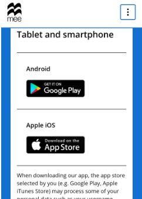
Компьютер
1Нажмите Download app → Download рядом с вашей операционной системой.
2Откройте скачанный файл и нажмите Install.
3После установки войдите под своим логином и паролем.
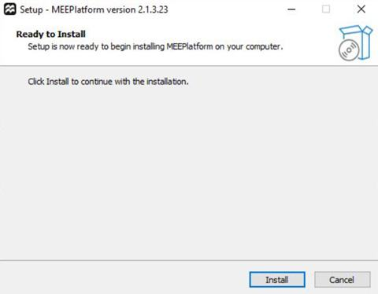
Кто что может на платформе
У учителя и у администратора учреждения (Institution Manager) разные права. Вот главное, что важно знать:
Admin учрежденияУчитель
Создать учебное заведение✓✓
Изменить данные учреждения✓—
Пригласить пользователей✓✓
Создавать классы✓✓
Менять пароли учеников✓✓
Видеть домашние задания коллег✓✓
Оценивать задания—✓
Смотреть прогресс своих классов✓✓
Удалить учреждение / пользователя——
Совет. Администратором становится тот, кто создал учебное заведение на платформе — это не обязательно директор или завуч, это может быть любой назначенный учитель.
Присоединение к существующему учреждению
1Войдите в аккаунт на платформе MEE.
2Перейдите в Class setup → Enter a joining code.
3Введите код учреждения, который дал администратор.
4Нажмите Check, затем Join, если учреждение верное.
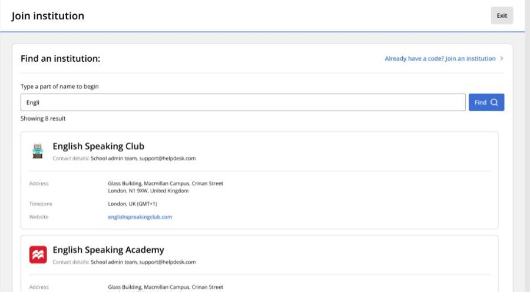
Совет. Не знаете код или кто администратор? Воспользуйтесь функцией «Find an institution» — платформа покажет имя и email администратора.
Создание нового учреждения
Создавайте учреждение только если вас об этом попросили — как правило, для школы это делает один человек.
1Class setup → Create an institution.
2Заполните название, адрес, регион, часовой пояс и контактные данные.
3Нажмите Done.
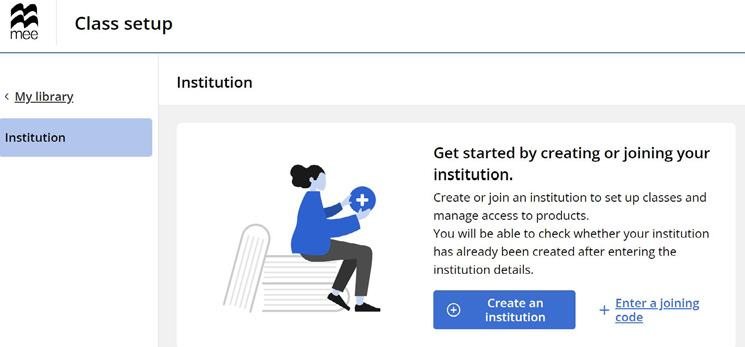
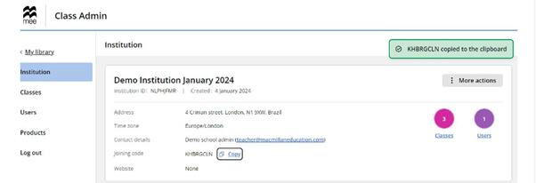
Код учреждения — им делятся с учениками и коллегами
Совет. В одном учреждении может быть несколько администраторов — их можно добавить позже через Users → Invite.
2Укажите email, имя, фамилию и роль (student / teacher).
3Добавьте в класс и нажмите Complete.
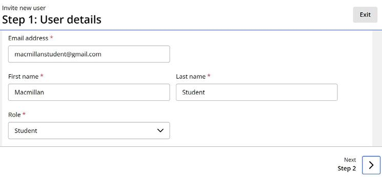
Массово (до 100 человек)
1Invite → Import CSV file.
2Скачайте шаблон, заполните и загрузите файл.
3Примите условия и нажмите Finish import.
Совет. Для несовершеннолетних учеников укажите email родителя/опекуна — регистрацию за ребёнка проходит он.
Логины для учеников без email
Учитель может завершить регистрацию ученика сам и выдать готовый логин и пароль — удобно для младших классов.
1При приглашении отметьте галочку «I will complete the registration of this user».
2В классе выберите ученика, нажмите Generate passwords.
3Распечатайте карточку с логином и паролем и выдайте ученику.
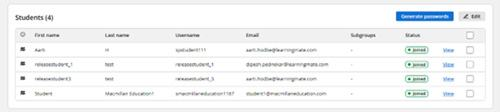
Список учеников класса: галочка + Generate passwords
Поиск и фильтры
В разделе Users можно искать по имени, фамилии, логину или email, а также фильтровать по роли и статусу (Joined / Invited).
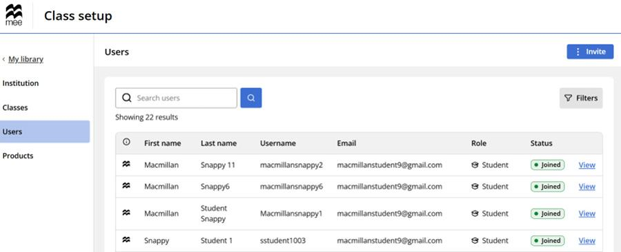
Совет. Изменить данные вы можете только у своих учеников — у других учителей и учеников не из ваших классов такой возможности нет.
Создание класса
Один класс
1Class setup → Classes → Create class → Create new class.
2Введите название и дату окончания, нажмите Create.
3На панели класса нажмите Add, чтобы добавить учеников и курс.
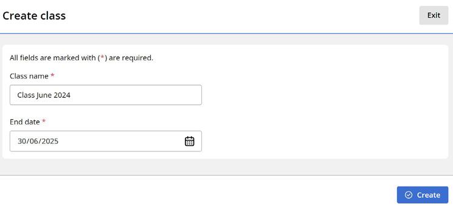
Массово (до 100 классов)
1Create class → Import CSV file.
2Скачайте шаблон: название класса, дата окончания, описание, подгруппы.
3Загрузите файл и нажмите Finish import.
Код класса и управление
Код класса находится на странице класса — скопируйте и отправьте ученикам, чтобы они присоединились сами.
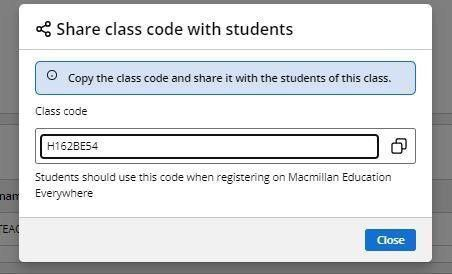
Архивация
Classes → найдите класс → Archive class. Архивные классы можно восстановить (Unarchive) в любой момент — дата окончания продлится на год.
Google Classroom
Войдите на MEE через тот же Google-аккаунт, что и в Google Classroom → Classes → Create class → Import classes with Google Classroom → выберите классы для импорта.
Совет. В настройках класса можно добавлять и убирать учеников, учителей и курсы в любой момент — Class Management → Edit.
Инструменты показа на уроке
При демонстрации цифрового учебника в классе доступен набор инструментов.
Полноэкранный режим
1Full screen mode — увеличивает контент, меньше отвлекает внимание.
2Exit full screen mode — обычный вид.
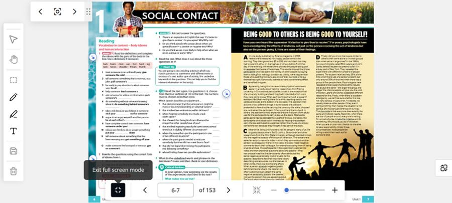
Фокус (Focus)
1Переносит по очереди к каждой активной зоне страницы — удобно во время объяснения.
2Стрелками — вперёд/назад между зонами, можно добавлять аннотации.
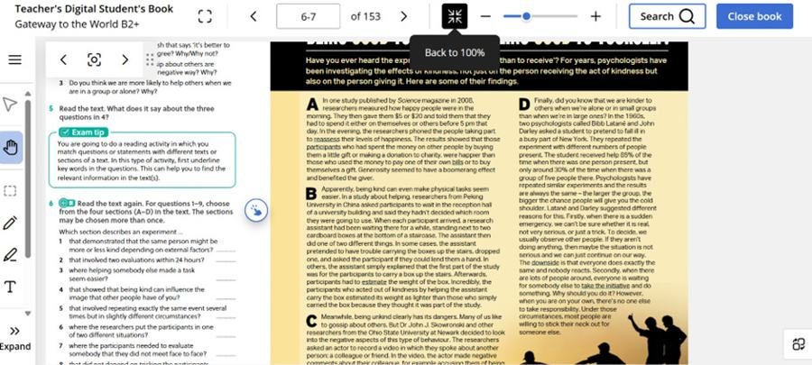
Другие инструменты
Zoom — свободный зум ползунком. Quick links — переход к связанным материалам курса (например, к заданию в рабочей тетради). Search — поиск по номеру страницы или ключевому слову. Стрелки вверху — постраничная навигация.
Аннотирование страниц
Pen / Highlighter / Type
Пишите от руки (Pen), выделяйте текст маркером (Highlighter) или добавляйте печатный текст (Type) — для каждого можно выбрать цвет.
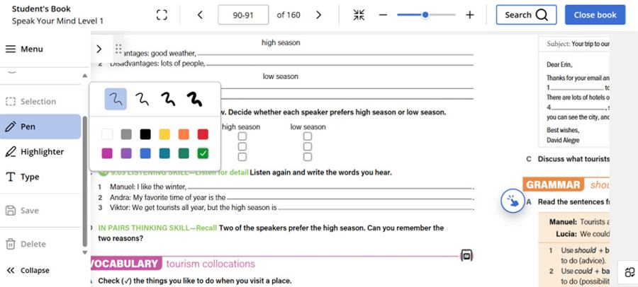
Hand / Selection
Hand — перемещение и зум жестами на любом устройстве. Selection — выбрать уже сделанную аннотацию, чтобы передвинуть или удалить её. Canvas — вернуться к обычному виду страницы, скрыв аннотации.
Сохранение
После изменений система спросит, сохранить ли их.
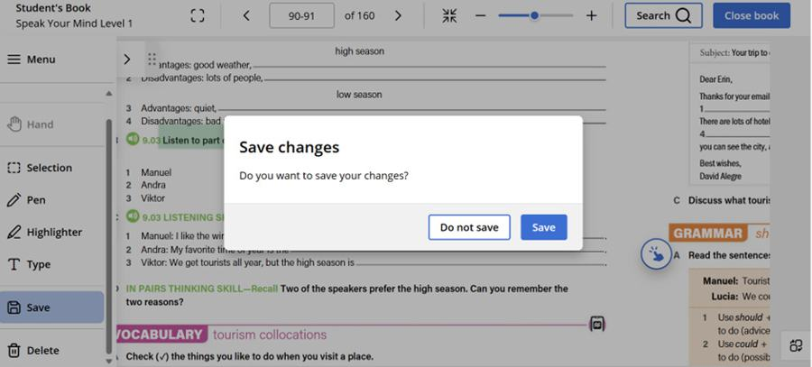
Меню книги
Table of contents / Bookmarks
1Значок Menu → Table of contents — переход между юнитами и уроками.
2Add a bookmark — закладка на нужную страницу.
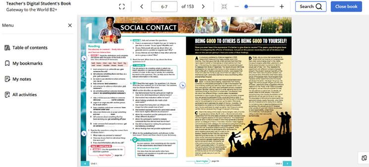
My Notes / All activities
Выделите текст → Add a note — заметка сохраняется и выгружается в PDF. All activities — быстрый переход к любому заданию юнита или урока.
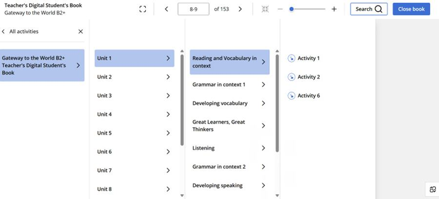
Офлайн-доступ
My Downloads — скачайте юнит, урок или весь учебник целиком, чтобы открывать его без интернета в приложении.
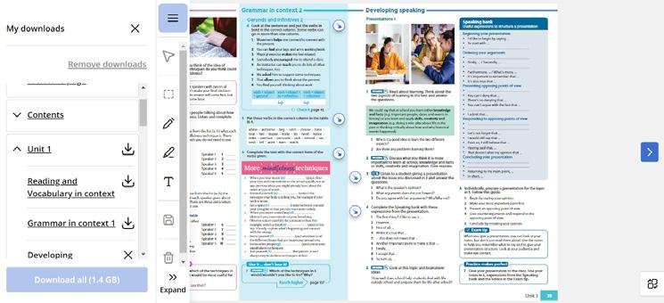
Дашборд домашних заданий
Здесь виден статус всех заданий: Not started, In progress, Requires grading, Completed — и вкладки Active / Future / Past / Drafts.
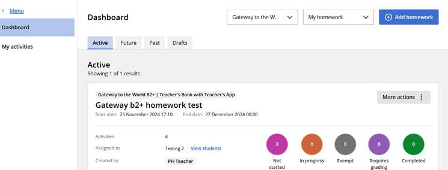
Совет. Домашние задания коллег из вашего учреждения тоже видны (если у вас общая подписка на курс), но редактировать и удалять их может только автор.
Создание и назначение
1School work → Homework → Dashboard → +Add Homework.
2Назовите задание и нажмите Save.
3Add → выберите активности из Student's Book, Workbook или On-the-Go Practice.
4Назначьте класс(ы) — Assign → Next.
5Задайте даты начала/окончания и сообщение ученикам.
6Submit — задание отправлено. Без Submit оно сохранится как черновик.
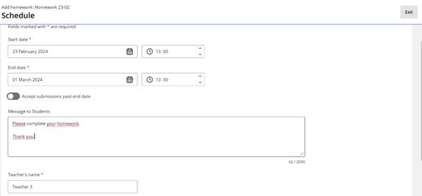
Дата, время и сообщение ученикам при назначении
Редактирование и новые ученики
Активное задание можно редактировать и довавлять в него новых учеников, присоединившихся позже — More actions → Edit homework.
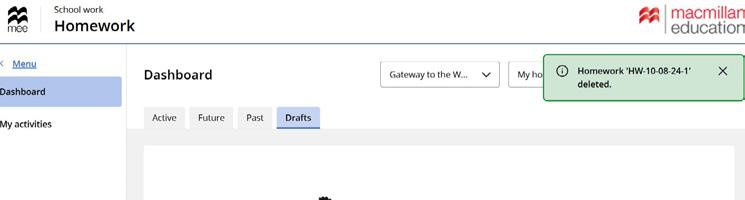
Совет. Удалить можно только задание в статусе Future или Draft — это действие нельзя отменить.
Создание проверочной работы
School work → Assessment → Dashboard → Add Assessment. Есть три формата:
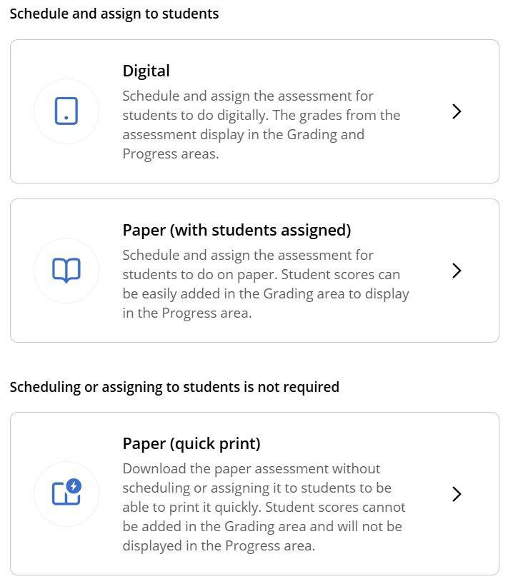
Digital
Ученики выполняют онлайн, оценки попадают в Grading и Progress автоматически.
Paper (с назначением)
Печатная работа, но результаты вносятся в платформу вручную и учитываются в прогрессе.
Paper / Quick print
Просто скачать и распечатать, без назначения ученикам — не отображается в прогрессе.
Вопросы, назначение, график
1Add рядом с Questions — выбирайте из Question bank, готовых тестов или своих вопросов.
2Проверьте список вопросов (максимум 100) и нажмите Done.
3Assign — выберите класс или подгруппу учеников.
4Задайте даты, время, проходной балл и длительность.
5Для Paper/Quick print — выберите, включать ли титульный лист и лист с баллами.
6Submit — работа назначена, ученики получат уведомление.
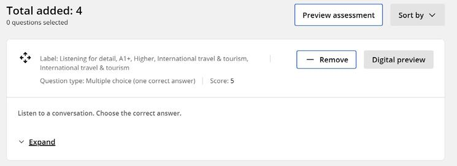
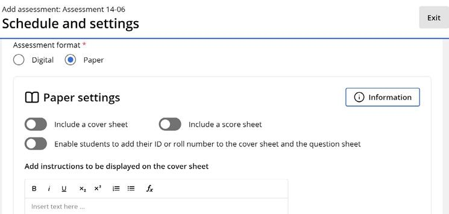
Настройки бумажной проверочной
Редактирование по статусу
Набор доступных действий зависит от статуса работы: у будущей — поделиться, копировать, редактировать, удалить; у активной — поделиться, копировать, продлить срок; у прошедшей — поделиться и копировать; у черновика — редактировать и удалить.
Дашборд прогресса
School work → Progress. Показывает данные за 2,5 года по трём блокам: Coursework (учебник, рабочая тетрадь, практика), Homework и Assessment.
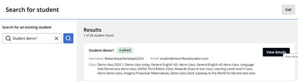
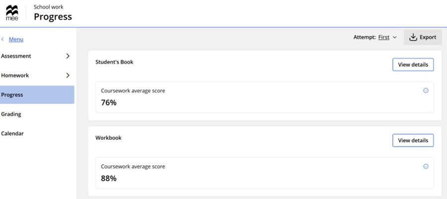
Средний процент выполнения по компонентам курса
Экспорт данных
Экспортировать можно на трёх уровнях — курс/класс, отдельный класс со всеми компонентами, или один ученик.
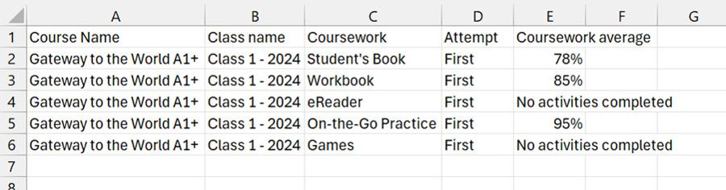
Пример выгрузки в формате .csv
Совет. Чтобы посчитать общее число выполненных заданий класса в Excel, используйте формулу =SUM(диапазон ячеек).
Ответы учеников и полный экспорт
В карточке любого задания можно открыть View details → значок под Actions → View, чтобы увидеть правильные и неправильные ответы ученика.
Export all на дашборде прогресса выгружает данные по всем курсам и классам за выбранный период (до 1 года).
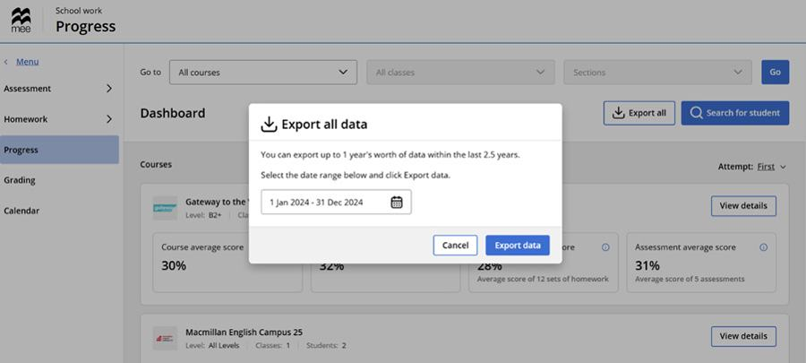
Проверка заданий, требующих оценки
1School work → Grading → выберите класс.
2Задания ждут проверки во вкладке Requires grading — автоматически проверенные видны в Completed.
3Откройте активность → Grade рядом с учеником.
4Проверьте ответы, поставьте балл и оставьте комментарий → Submit.
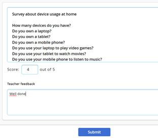
Балл и комментарий для ученика
Совет. Функция Exempt убирает попытку из прогресса без штрафа — полезно, если ученик болел. Работу можно назначить повторно в любой момент.
Оценивание бумажной проверочной
Баллы за печатную работу вносятся в платформу вручную.
1School work → Grading → найдите класс, где есть работы на проверку.
2В Requires grading найдите нужную работу → View details.
3Для каждого ученика внесите баллы по вопросам — можно использовать Enter 0 или Enter the max score сразу для нескольких вопросов.
4При необходимости оставьте отзыв через Give Feedback → Save.
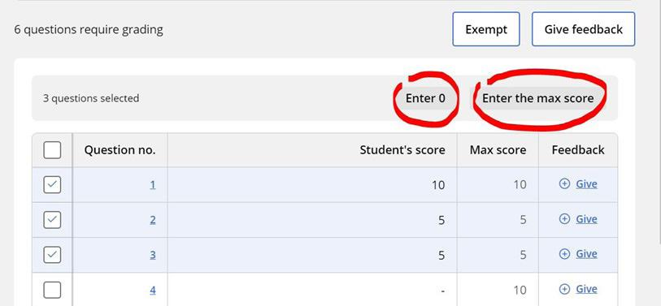
Совет. Ученики увидят оценку только после даты окончания работы — выбирайте дату окончания заранее, изменить её на более раннюю после назначения нельзя.
Уведомления
Учитель получает уведомление, когда ученик отправил домашнее задание или проверочную работу, а также когда появляется работа, ожидающая ручной проверки.
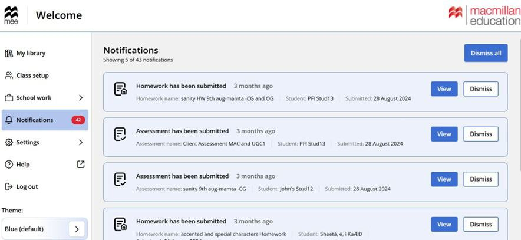
Кнопка View у уведомления ведёт прямо к нужной работе; Dismiss и Dismiss all скрывают уведомления.
Календарь
1School work → Calendar → Add event.
2Укажите название, дату и время начала и окончания.
3Add под Attendees — пригласите учеников/класс.
4При необходимости подключите видеозвонок (Zoom, Google Meet, Microsoft Teams).
5Save — событие появится в календаре учеников.
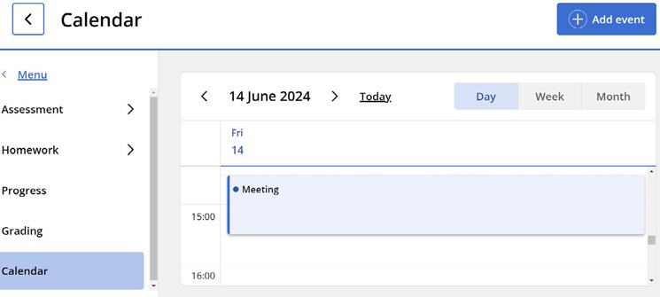
Событие в календаре
Настройки
В разделе Settings: личные данные и смена пароля, привязка Google/Microsoft-аккаунта, код учреждения/класса, язык интерфейса, тема оформления.
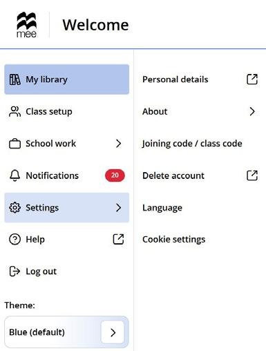
Поддержка
Телефон: +44 (0)207 014 6767
Веб-форма и чат Пн–чт: 8:00–00:00 (UK) · Пт: 8:00–20:00 (UK)